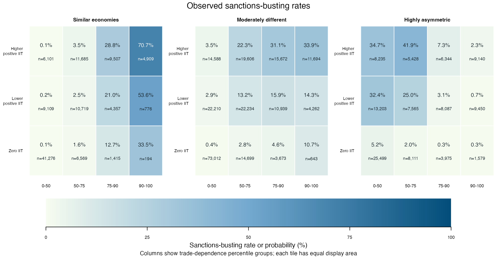
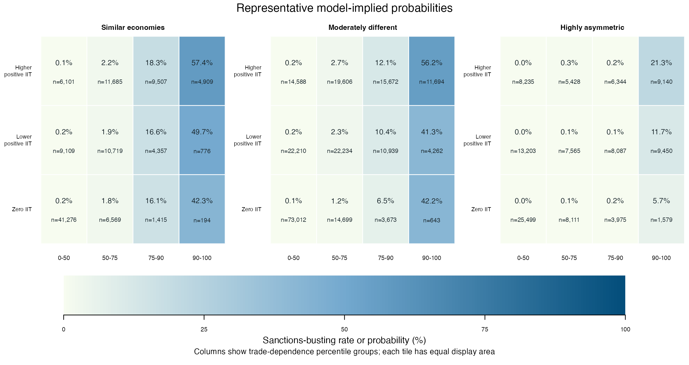
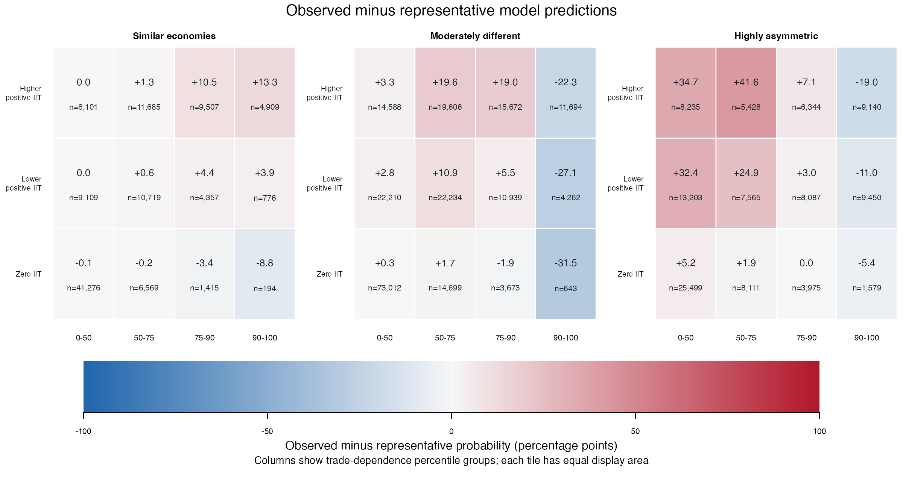
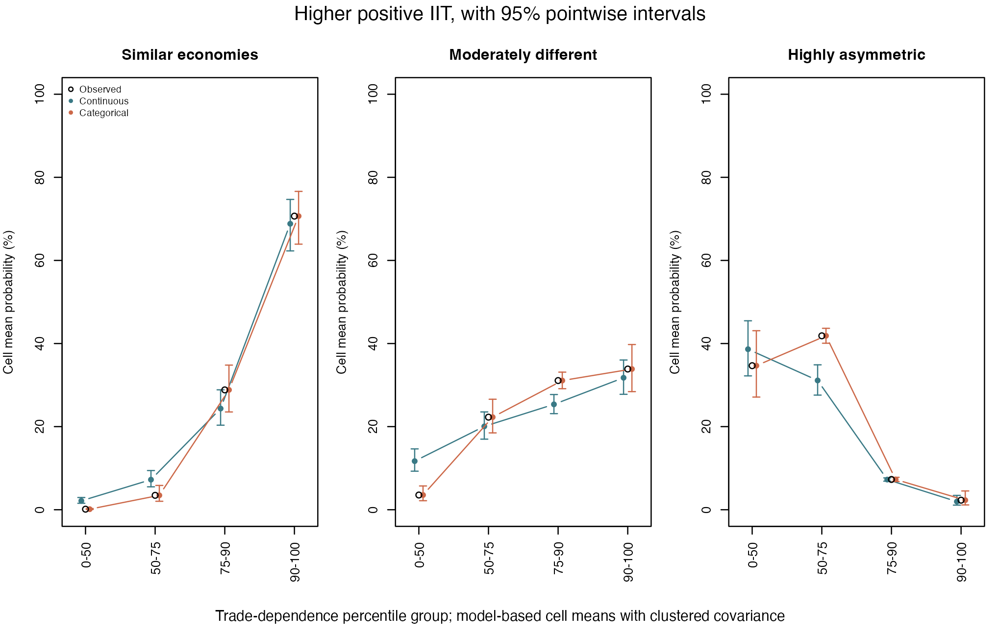

A research case study in categorization
Intra-industry trade, dependence, and sanctions busting
Keith A. Preble
Source:vignettes/ii-case-study.Rmd
ii-case-study.RmdWhat this case study asks
A researcher may choose categories to reveal interpretable combinations of variables, then ask whether those categories also improve prediction. Those are related questions, but they need not have the same answer.
This case study follows Keith A. Preble’s APSA Preprints paper, Commercial Embeddedness and Sanctions Busting: Intra-Industry Trade, Dependence, and Economic Asymmetry, using fixed-effects logit models. The preprint is available at doi:10.33774/apsa-2026-7wxvk.
The research concerns third-party states’ trade with sanctioned targets. It asks whether the organization of trade, dependence on the trading partner, and differences in economic size help distinguish sanctions-busting patterns. The example uses SITC-derived trade data.
The lesson is not that bins are always better. The categories organize meaningful trade configurations and improve on a particular continuous interaction in the prediction comparison. A flexible alternative predicts better still. The distinction between interpretation and prediction is precisely what a binning decision tool should make visible.
What runs in this vignette
This guide ships small, verified aggregate summaries of real observations. It recreates tables and figures from saved results; it does not reconstruct the research panel or refit its models during package installation or checks. There are no individual dyad-year records or fitted research models in these bundled summaries. The full replication data are needed to rerun the regressions.
Load the package and the case-study summaries.
system.file() locates a file inside the installed package,
so no personal folder path is needed.
library(binwise)
case <- readRDS(system.file("extdata", "ii-case-study.rds", package = "binwise"))
case$metadata[c("n", "years", "events")]
#> $n
#> [1] 426465
#>
#> $years
#> [1] 1963 2023
#>
#> $events
#> [1] 43007The categorical-model sample contains 426,465 directed dyad-years from 1963 through 2023, including 43,007 observations coded as sanctions busting. A directed dyad-year is one third-party-to-target relationship in a given year. These rows are not 426,465 independent countries or country pairs.
| Material | Status in this guide |
|---|---|
| The paper’s categorical definitions, observed cells, and logit specification | Research analysis used to illustrate categorization |
| Same-sample continuous comparison and cell-mean confidence intervals | Additional diagnostic comparisons prepared for the case study |
| Grouped held-out validation and the flexible benchmark | Additional internal prediction checks prepared for binwise |
1. Start with what the variables mean
Intra-industry trade, or IIT, measures reciprocal exchange within the same industries. Its index ranges from 0 to 1. In this setting, zero distinguishes trade with no measured intra-industry component from positive intra-industry exchange. It does not mean that the trading relationship itself is absent.
Trade dependence is the fraction of the third party’s total trade accounted for by the target. The direction matters: this is the target’s importance to the third party, not the third party’s importance to the target. There are no zero dependence values in this estimation sample.
Economic asymmetry is the absolute difference in the two countries’ logged GDP values. Smaller values indicate more similarly sized economies. The paper examines whether the IIT/dependence pattern differs across economic contexts.
All three predictors used here are lagged. The sanctions-busting outcome uses the paper’s operational definition of trade expansion and target trade share. It is an observed binary classification under that definition, not a direct measurement of a government’s intention.
2. Understand the category choices
The paper separates zero IIT, then divides positive IIT at its median. Dependence uses the 50th, 75th, and 90th percentiles, giving progressively finer upper-tail groups. Economic asymmetry uses the lower quarter, middle half, and upper quarter. These three GDP groups are sometimes called quartile-tail groups; they are not four equal-sized quartiles.
case$bins[, c("variable", "category", "lower", "upper", "n")]
#> variable category lower upper n
#> 1 iit IIT = 0 0.000e+00 0.000e+00 180645
#> 2 iit Positive IIT: 0-50th pct. 1.024e-07 1.744e-02 122911
#> 3 iit Positive IIT: 50-100th pct. 1.744e-02 9.975e-01 122909
#> 4 trade 0-50th pct. 3.498e-09 5.242e-04 213233
#> 5 trade 50-75th pct. 5.242e-04 3.999e-03 106616
#> 6 trade 75-90th pct. 3.999e-03 2.048e-02 63969
#> 7 trade 90-100th pct. 2.048e-02 8.617e-01 42647
#> 8 gdp Similar economies 6.395e-07 1.020e+00 106617
#> 9 gdp Moderately different economies 1.020e+00 3.580e+00 213232
#> 10 gdp Highly asymmetric economies 3.580e+00 1.176e+01 106616lower and upper are boundaries on the
original numeric scales. n is the number of observations
assigned to a category. Values at an interior cutpoint go into the lower
interval, because these intervals include their upper endpoint. The
zero-IIT group is assigned separately.
There are 180,645 zero-IIT observations, about 42.4% of the sample. The positive median is approximately 0.01744. The labels “lower” and “higher” positive IIT refer to this sample’s positive distribution. “Higher” does not mean near the theoretical maximum of 1. Small count differences between positive groups arise because equal values stay together.
What is substantive, and what is empirical? The zero-versus-positive IIT distinction has substantive meaning in this application. The median and percentile thresholds are empirical choices used to organize variation. They are not established economic discontinuities. Their sensitivity still matters.
Look at dependence as percentages rather than fractions.
trade <- case$bins[case$bins$variable == "trade", ]
data.frame(
category = trade$category,
lower_percent = signif(100 * trade$lower, 4),
upper_percent = signif(100 * trade$upper, 4),
observations = trade$n
)
#> category lower_percent upper_percent observations
#> 1 0-50th pct. 3.498e-07 0.05242 213233
#> 2 50-75th pct. 5.242e-02 0.39990 106616
#> 3 75-90th pct. 3.999e-01 2.04800 63969
#> 4 90-100th pct. 2.048e+00 86.17000 42647The boundaries are approximately 0.0524%, 0.400%, and 2.048%. The top group extends to about 86.2%. These cutpoints come from the lagged estimation sample; they should not be substituted for cutpoints computed on a different trade dataset.
Compare that top group with ordinary quartiles.
comparison <- case$trade_comparison
comparison$lower_percent <- signif(100 * comparison$lower, 4)
comparison$upper_percent <- signif(100 * comparison$upper, 4)
comparison[, c("scheme", "bin", "lower_percent", "upper_percent", "n")]
#> scheme bin lower_percent upper_percent n
#> 1 quantile_4 B1 3.498e-07 0.005821 106617
#> 2 quantile_4 B2 5.821e-03 0.052420 106616
#> 3 quantile_4 B3 5.242e-02 0.399900 106616
#> 4 quantile_4 B4 3.999e-01 86.170000 106616
#> 5 paper B1 3.498e-07 0.052420 213233
#> 6 paper B2 5.242e-02 0.399900 106616
#> 7 paper B3 3.999e-01 2.048000 63969
#> 8 paper B4 2.048e+00 86.170000 42647Ordinary quartiles put roughly 0.400% through 86.2% together. The paper divides that interval at about 2.048%. This preserves an additional upper-tail distinction, but its highest group remains broad. Finer categorization solves only part of the information-loss problem.
3. Use heatmaps to understand the combinations
The main finding to look for is that dependence has different patterns in different economic contexts. Among similarly sized economies with higher positive IIT, sanctions busting is concentrated in the highest-dependence group. Among highly asymmetric economies with higher positive IIT, it is concentrated in the lower-dependence groups. The bins make these combinations easy to compare.
All three heatmaps below use the same categories. The first shows what happened in the data. The second shows predictions from the paper’s categorical model at representative settings. The third subtracts the second from the first. The comparison with continuous models comes later in the guide.
First, learn what one square means
Each square, or cell, collects observations with one combination of three characteristics. Use these directions to find a cell in the first heatmap.
| Part of the figure | What it identifies |
|---|---|
| Panel | How similar the two economies are in size. The left panel contains the most similar economies; the right panel contains the most asymmetric. |
| Row | The IIT group. The bottom row is zero IIT, the middle row is the lower half of positive IIT, and the top row is the upper half of positive IIT. |
| Column | The dependence group, increasing from left to right.
For example, 90-100 means the highest tenth of the
dependence distribution, not dependence between 90% and 100%. |
| Percentage inside the square | The fraction of observations in that cell classified as sanctions busting. |
n inside the square |
The number of dyad-year observations in the cell, including both busting and non-busting observations. |
Find the top-right square of the Similar economies panel. It combines similarly sized economies, higher positive IIT, and the highest dependence group. Its label is 70.7%, n = 4,909. That means 3,469 of those 4,909 dyad-years were classified as sanctions busting. It does not mean that the cell contains 70.7% of all sanctions-busting observations in the dataset.
There are 36 cells in total. The panels use the GDP groups introduced in Section 2, consisting of the lower quarter, middle half, and upper quarter of economic asymmetry. Every panel shares the same color scale. Darker squares have higher rates, not necessarily more observations.

Now make three comparisons
1. Move across the top row of Similar economies. The observed rates are 0.1%, 3.5%, 28.8%, and 70.7%. Within this economic-size and IIT combination, higher dependence groups have higher sanctions-busting rates. The largest rate is in the top-right square you just identified.
2. Move to the same top row in Highly asymmetric economies. The rates are 34.7%, 41.9%, 7.3%, and 2.3%. Here, the two lower-dependence groups have much higher rates than the two upper-dependence groups. The highest-dependence square has a rate of only 2.3%, compared with 70.7% in the corresponding square for similar economies. The middle panel shows another pattern, rising from 3.5% to 33.9% across that row, with much less change between its last two groups.
3. Look down the first column of Highly asymmetric economies. The rate is 34.7% for higher positive IIT, 32.4% for lower positive IIT, and 5.2% for zero IIT. In this low-dependence group, the distinction between zero and positive IIT is especially visible. Looking only at dependence would miss it.
What does binning contribute here?
The substantive conclusion is that dependence, IIT, and economic asymmetry need to be interpreted together. A statement such as “higher dependence is associated with more sanctions busting” describes some combinations poorly. The heatmap lets a reader identify which combinations have high or low rates without having to interpret a set of interaction coefficients.
This is a reason to consider categories for description and communication. The bins turn three numeric variables into a manageable set of comparisons. They summarize a pattern already present in the observations; they do not create it. Flexible continuous models can also represent such patterns. Later sections ask whether using categories in the prediction model improves accuracy.
Binning also hides variation. Each square contains observations with different numeric values, and equal-sized squares can contain very different numbers of observations. In the similar-economy, zero-IIT row, for example, the rightmost cell has only 194 observations, while the leftmost has 41,276. Read the counts alongside the percentages. Uncertainty intervals are needed to assess precision. These descriptive patterns alone establish neither a causal effect nor a special economic threshold at an exact cutpoint.
Next, distinguish observed rates from model predictions
The second heatmap asks what probability the categorical model assigns to each combination at representative settings for the other variables. Those other variables include the model’s controls and fixed effects. The prediction uses selected settings, such as group-specific means or medians for controls and a common year, rather than the actual covariates of every observation in the cell.
Think of each square as a constructed example of that combination. Its prediction answers, “What probability does the model give this combination at these settings?” The first heatmap instead answers, “What fraction of the observations in this combination actually experienced sanctions busting?” These are different summaries, so they need not be equal.
Both heatmaps below and above use the same categories and 0-100% scale. Percentages are rounded to one decimal place; a displayed 0.0% can represent a small positive probability.

Return to the top-right square in Similar economies. The first heatmap reports an observed rate of 70.7%; this one gives a representative prediction of 57.4%. The categorical model still assigns this combination a relatively high probability, but the prediction for the chosen settings is below the observed cell rate.
Now inspect the top row, second column in Highly asymmetric economies. The observed rate is 41.9%, whereas the representative prediction is about 0.3%. The difference is much larger. This is a reason to examine how the chosen representative settings compare with the observations in that cell. It is not yet a measure of how well the model predicts those actual observations.
Finally, use the difference heatmap to locate the gaps
Each value in the third heatmap is calculated as
observed cell rate minus representative predicted probability.
Red squares have positive differences, meaning the observed rate is higher. Blue squares have negative differences, meaning the representative prediction is higher. White is close to zero. Unlike the first two maps, this map measures percentage-point differences.

Follow these three examples through the maps. All use higher positive IIT, the top row.
| Economic-size panel and dependence group | Observed rate | Representative prediction | Difference |
|---|---|---|---|
| Similar economies, 90-100 | 70.7% | 57.4% | +13.3 percentage points |
| Highly asymmetric economies, 50-75 | 41.9% | 0.3% | +41.6 percentage points |
| Highly asymmetric economies, 90-100 | 2.3% | 21.3% | -19.0 percentage points |
For the first row, subtracting 57.4 from 70.7 gives +13.3. The red square means the observed rate is higher. For the last row, subtracting 21.3 from 2.3 gives -19.0. The blue square means the representative prediction is higher.
These gaps help locate combinations worth examining. Their size can reflect both the model specification and how representative settings differ from the actual mix of observations. They are not held-out prediction errors or tests of statistical significance. In particular, they do not show that bins perform better or worse than continuous predictors, because all three maps use the same categories and only the categorical model appears in the prediction map.
The takeaway from the heatmaps is an interpretable pattern of joint combinations. The next step is to assess the model using predictions for the actual observations, followed by uncertainty intervals and held-out tests. That separates the usefulness of bins for explaining a pattern from their usefulness for predicting new observations.
4. Separate descriptive agreement from model evidence
The paper’s categorical specification includes all joint IIT/dependence/GDP cell effects, controls, year fixed effects, and sanction-configuration fixed effects. Standard errors are clustered by third-party and target country.
An additional benchmark retains continuous IIT and dependence, their interaction, and interactions with the GDP groups. The remaining controls and fixed effects are held consistent. Averaging each model’s predictions over the same observed rows in each cell gives a comparable diagnostic.
The difference is extremely small. With this unpenalized logit specification, the joint cell effects make the fitted cell averages reproduce observed cell rates, up to numerical tolerance. That in-sample agreement is expected from the model’s score equations. It is not independent evidence that the cutpoints are right, or that the categories will predict new observations well.
The representative-prediction heatmap above uses a different quantity from predictions averaged over observed rows. There is no contradiction between its nonzero differences and the near-exact cell-average agreement here. The next figure is the added cell-average diagnostic, with confidence intervals.
5. Add uncertainty without overstating what it resolves
These intervals describe fitted mean probabilities, conditional on the selected bins and observed covariates. They incorporate year and configuration coefficients using explicit indicators and two-way country-clustered covariance. They are not intervals for individual binary outcomes.
ci <- case$confidence[
case$confidence$iit_model_bin == "Positive IIT: 50-100th pct.", ]
local({
old <- par(no.readonly = TRUE)
on.exit(par(old))
par(mfrow = c(1, 3), mar = c(5, 4, 3, 1), oma = c(2, 0, 2, 0))
for (j in seq_along(gdp_groups)) {
z <- ci[ci$gdp_similarity_bin == gdp_groups[j], ]
plot(NA_real_, NA_real_, xlim = c(.8, 4.2), ylim = c(0, 100), xaxt = "n",
xlab = "", ylab = "Cell mean probability (%)",
main = c("Similar economies", "Moderately different", "Highly asymmetric")[j])
axis(1, 1:4, c("0-50", "50-75", "75-90", "90-100"), las = 2)
for (m in c("continuous", "categorical")) {
a <- z[z$model == m, ]
a <- a[match(trade_groups, a$tpts_bin), ]
at <- 1:4 + if (m == "continuous") -.06 else .06
color <- if (m == "continuous") "#397985" else "#CC6848"
lines(at, 100 * a$estimate, type = "b", pch = 16, col = color)
arrows(at, 100 * a$lower, at, 100 * a$upper,
angle = 90, code = 3, length = .03, col = color)
if (m == "categorical") points(1:4, 100 * a$observed, pch = 1)
}
if (j == 1) legend("topleft", c("Observed", "Continuous", "Categorical"),
col = c("black", "#397985", "#CC6848"), pch = c(1, 16, 16), bty = "n", cex = .75)
}
mtext("Higher positive IIT, with 95% pointwise intervals", 3, outer = TRUE, line = .5)
mtext("Trade-dependence percentile group; model-based cell means with clustered covariance",
1, outer = TRUE, line = .3, cex = .75)
})
The continuous benchmark smooths over parts of the observed pattern. The intervals describe uncertainty under the fitted specifications; their overlap is not a paired test of differences between models.
The covariance estimator required a positive-semidefinite adjustment
in both explicit-indicator fits. This warning is retained in
case$confidence_checks. These intervals depend on the
fitted model and covariance assumptions. Neither these intervals nor the
later score intervals account for uncertainty from choosing the
categories.
6. Ask a different question with held-out predictions
The additional validation holds out unordered country pairs in five folds. Both directions and all years of a pair stay together. The models predict rows for a pair they did not fit. This assesses generalization across pairs during the observed period. It does not assess forecasting later years or entirely new countries.
Within each training fold, the workflow learns the positive-IIT median, trade percentiles, GDP cutpoints, and spline knots. The outcome definition, including its previously calculated sanctions-busting threshold, remains fixed. This validation does not repeat the upstream construction of the outcome labels.
| Candidate | Representation |
|---|---|
continuous |
Linear IIT and dependence terms, their product, and interactions with GDP groups |
categorical |
Joint IIT/dependence/GDP categories following the paper’s grouping rule |
flexible |
Natural splines for IIT and log-transformed dependence, a positive-IIT indicator, and the original IIT-by-dependence product, interacted with GDP groups |
The flexible specification uses three-degree-of-freedom splines.
Dependence is transformed as log1p(100 * share), meaning
the logarithm of one plus its value in percentage points. The
positive-IIT indicator preserves the meaningful zero distinction. All
candidates retain the same outcome, controls, and fixed effects. All 15
final fold fits converged, and all 426,465 observations received
predictions from all three candidates.
This is not the same model as setting
spline_df = 3 in bin_interact(). The
paper needs three-way structure, fixed effects, and its specific zero
and transformation terms. Its validation used
bin_validate() with an advanced fit_predict
callback and the research estimator. The generic built-in spline option
is a simpler model interface.
case$scores[, c("model", "metric", "score", "lower", "upper")]
#> model metric score lower upper
#> 1 continuous Brier 0.04797 0.03770 0.05865
#> 2 categorical Brier 0.04201 0.03275 0.05169
#> 3 flexible Brier 0.03626 0.02816 0.04459
#> 4 continuous log_loss 0.16233 0.13032 0.19388
#> 5 categorical log_loss 0.14016 0.11068 0.16911
#> 6 flexible log_loss 0.12309 0.09592 0.14914The Brier score is the average squared difference between predicted probability and the observed 0/1 outcome. Log loss penalizes confident wrong predictions particularly strongly. Lower is better for both. These are losses, not percentages of correct classifications. A Brier score of 0.042 does not mean that 4.2% of observations were classified incorrectly.
The categories improve on the continuous benchmark, while the flexible model has the lowest pooled loss. That ordering also holds within each fold.
case$fold_scores[case$fold_scores$metric == "Brier", c("fold", "model", "n", "score")]
#> fold model n score
#> 1 1 continuous 85017 0.04778
#> 2 1 categorical 85017 0.04109
#> 3 1 flexible 85017 0.03486
#> 7 2 continuous 86041 0.04728
#> 8 2 categorical 86041 0.04153
#> 9 2 flexible 86041 0.03642
#> 13 3 continuous 84124 0.04953
#> 14 3 categorical 84124 0.04354
#> 15 3 flexible 84124 0.03792
#> 19 4 continuous 85960 0.04781
#> 20 4 categorical 85960 0.04225
#> 21 4 flexible 85960 0.03572
#> 25 5 continuous 85323 0.04746
#> 26 5 categorical 85323 0.04167
#> 27 5 flexible 85323 0.036407. Compare errors on the same held-out observations
The paired comparisons subtract one model’s loss from another’s using
the same observations. Negative values favor the model named in
model over reference.
case$differences
#> model reference metric difference lower upper
#> 1 categorical continuous Brier -0.005953 -0.008323 -0.003869
#> 2 flexible continuous Brier -0.011708 -0.015078 -0.008518
#> 3 categorical continuous log_loss -0.022174 -0.029531 -0.015700
#> 4 flexible continuous log_loss -0.039241 -0.048588 -0.029826
case$flexible_vs_categories
#> model reference metric difference lower upper
#> 1 flexible categorical Brier -0.005755 -0.007299 -0.004255
#> 2 flexible categorical log_loss -0.017067 -0.021175 -0.012951The categorical-minus-continuous Brier difference is about -0.00595. The flexible-minus-categorical difference is about -0.00576. Both associated intervals are below zero under this evaluation procedure. The log-loss comparisons tell the same story.
The 95% intervals use 999 paired bootstrap draws resampling third-party and target countries. Predictions and folds stay fixed. This approximates uncertainty in the evaluation sample, not the full uncertainty from refitting, choosing cutpoints, or selecting the preferred model. These are internal checks on data previously used to develop the paper, not a newly collected, untouched external test set.
The flexible model produced knot-adjustment messages because IIT has
many exact zeros. Covariance warnings and convergence checks are
available in case$diagnostics and
case$fit_checks. These diagnostics help readers assess
fitting limitations alongside the prediction scores.
8. What a reader should conclude
| Question | What this example supports |
|---|---|
| Do the categories help communicate the substantive pattern? | They organize joint configurations and make contrasts across economic contexts visible. |
| Are all the cutpoints known economic thresholds? | No. Zero IIT has a distinct interpretation; the percentile boundaries remain empirical choices. |
| Do the categories outperform this simple continuous interaction? | Yes, in this internal prediction comparison. |
| Do they outperform the flexible alternative examined here? | No. The flexible model has lower Brier score and log loss. |
| Does prediction decide whether categories are useful for presentation? | No. Presentation and prediction can justify different representations of the same numeric variables. |
| Does this prove a causal effect or the best possible specification? | No. Those claims require additional assumptions and evidence. |
A reader could retain continuous variables with flexible terms for
prediction, while using well-described categories to communicate
results. Another reader may have a substantive reason to use a
particular categorical specification. The useful contribution of
binwise is to make those choices and their consequences
inspectable, rather than to announce a universally best set of bins.
9. Recreate the categories when you have the full replication data
The following is optional and not run in this
vignette. It requires the 426,465-row complete-case research
dataset, which is not included in the package. The aggregate
case object above cannot substitute for individual records
when fitting the research models.
After loading that dataset into paper_data, these are
the category-construction steps. The original numeric columns are
retained by bin_apply().
iit_scheme <- bin_diagnose(paper_data, "iit_lag", bins = 2,
separate_zero = TRUE, warn = FALSE)
trade_scheme <- bin_diagnose(
paper_data, "thirdparty_trade_share_lag", method = "custom",
breaks = as.numeric(quantile(paper_data$thirdparty_trade_share_lag,
c(0, .5, .75, .9, 1))), warn = FALSE
)
gdp_scheme <- bin_diagnose(
paper_data, "gdp_similarity_lag1", method = "custom",
breaks = as.numeric(quantile(paper_data$gdp_similarity_lag1,
c(0, .25, .75, 1))), warn = FALSE
)
paper_binned <- bin_apply(paper_data, iit_scheme, name = "iit_binned")
paper_binned <- bin_apply(paper_binned, trade_scheme, name = "trade_binned")
paper_binned <- bin_apply(paper_binned, gdp_scheme, name = "gdp_binned")These steps reproduce the paper’s three category definitions while retaining the original numeric variables. Full-sample definitions describe the observed data; for predictive validation, learn definitions within each training fold instead. The paper’s fixed-effects models also require its controls and estimation specification.
Provenance and citation
The summary bundle is documented in ?ii_case_study.
Source-file hashes and relative paths are available in
case$provenance. The figures and tables use precomputed
research results. Running this vignette reproduces their presentation,
not the underlying regressions. The additional model comparisons and
internal validation illustrate the binwise workflow.
Preble, Keith (2026). Commercial Embeddedness and Sanctions Busting: Intra-Industry Trade, Dependence, and Economic Asymmetry. APSA Preprints. Posted November 16, 2026. https://doi.org/10.33774/apsa-2026-7wxvk.